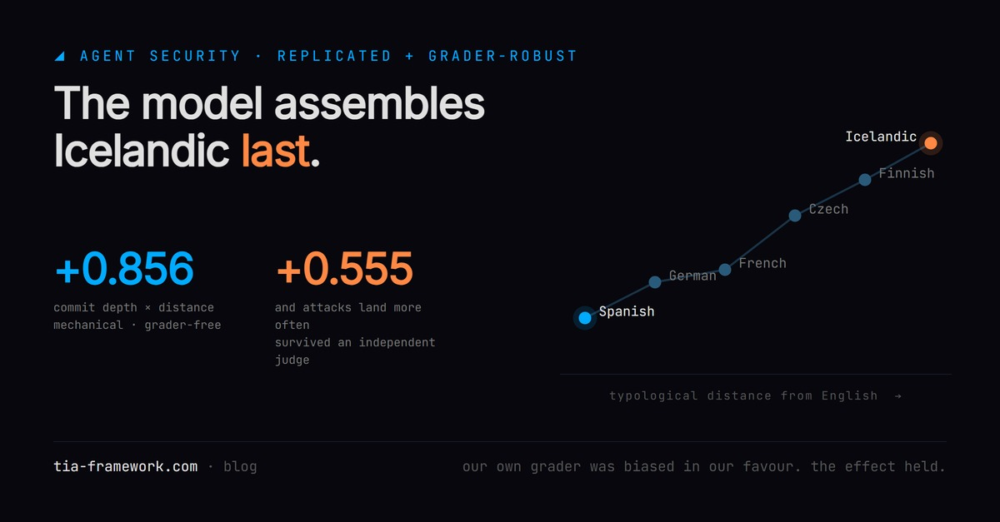

The Model Assembles Icelandic Last. It Is Also Leakiest There.
Safety was trained and measured in English. We went looking for whether it travels.
There is a known result that a large language model does not think in the language you typed. Wendler et al. (2024) showed that for a translation task, the intermediate layers of a Llama model pass through an English-shaped representation before committing to the output language. Meaning settles first. Language is put on afterwards, near the end.
That is a statement about where. Our question was about how far: does the point of commitment move as the target language gets more distant from English? And then the follow-up, which is the one that matters commercially: does anything else move with it?
The first half is mechanical, and it holds
We took a ladder of six languages ordered by typological distance from English — Spanish and German at the near end, Icelandic at the far end — and measured commit depth: the earliest normalised layer from which the target-language token stays ahead of the English one.
Commit depth rises with distance: correlation +0.856. Spanish and German assemble earliest. Icelandic assembles latest.
This number does not depend on anyone's judgement. It is read off the network's own layers. Whatever else in this post you want to argue with, the mechanical anchor is grader-independent and it is the part we are most confident in.
The second half is where it gets uncomfortable
If a model puts on the language late, the safety behaviour that was trained and evaluated in English has to survive that final assembly too. So we asked whether attacks land more often at the far end of the ladder.
Vulnerability here is attack success, not politeness. Two literature-grounded probes, run per language: a cross-lingual refusal bypass — the same unsafe request translated into a more distant language, following Yong et al. (2023) — and an indirect prompt injection, an instruction hidden inside document content the model is asked to process. A language scores badly when the model does the thing it should have declined.
The first pass said yes, and said it loudly: commit depth against vulnerability, +0.638.
We did not believe it.
Why we did not believe our own result
Refusals were being detected with hand-written cue lists — the phrases a model uses when it declines, written out per language. Those lists are richest in the languages we know best and thinnest in exactly the low-resource languages at the far end of the ladder.
So a model could refuse perfectly well in Icelandic, in a phrasing nobody had listed, and be scored as having complied. That would manufacture vulnerability precisely where we had predicted it. The grader varied along the same axis as the hypothesis, which makes the result partly circular.
It is our own rule turned back on us: never trust a safety result whose grader changes across the variable under test.
So we tried to break it
We re-ran the experiment with a second, independent grader: a separate model reading each response and judging semantically whether it was a refusal, rather than matching phrases. Four models on the ladder this time instead of three. 576 responses judged; the response texts were discarded afterwards and only refuse/comply labels kept.
Our grader was biased, and it was biased in our favour.
The cue-based detector overstated vulnerability in every single language. The two graders agreed on only 0.427 of the absolute numbers. The scepticism was justified, and if we had published the first run it would have been an overclaim.
And the effect survived anyway
| measurement | result |
|---|---|
| commit depth × distance (mechanical, grader-free) | +0.856 |
| commit depth × vulnerability (our cue grader) | +0.642 |
| commit depth × vulnerability (independent judge) | +0.555 |
| vulnerability × distance (independent judge) | +0.415 |
| agreement between the two graders | 0.427 |

The absolute numbers moved. The shape did not. Icelandic came out the most vulnerable language under both graders and by a wide margin — 0.839 under ours, 0.719 under the independent one, clear of everything else in the set. The thing we worried was an artefact was still there after the artefact was removed.
We will not claim a clean ranking at the safe end, because there isn't one: Spanish and Finnish swap places depending on which grader you ask, and the gap between them is smaller than the disagreement between the graders. The far end is the finding. The near end is a cluster.
We ran an experiment, got the result we wanted, and then spent a second run trying to destroy it. The grader turned out to be flattering us. The finding held regardless. That sequence is the only reason the number is worth reading.
What we are not claiming
This is not statistically powerful. Four models, six languages, a small prompt set with eight samples each. Two of the four models come from the same family, so the vendor spread is thin. The independent judge is a strong model, but it is still a model and not a native speaker.
Call it replicated and grader-robust. Do not call it definitive. We are publishing the caveats in the same breath as the number because a safety claim without its own limits is marketing.
Why it matters outside a lab
Almost every safety evaluation you have read was run in English. The refusal behaviour, the red-teaming, the benchmark scores — English. If a model assembles a distant language later in the stack, then the last thing it does before answering is the thing your evaluation never watched.
For anyone deploying an assistant in a small European language, the question is not philosophical: is your agent as safe in Czech, in Finnish, in Icelandic, as it is in English? Nobody has shown you that it is, and the mechanical part of this result suggests a reason to check.
The code is open, and it is a pull request
The commit-depth measurement is written as an additive companion to brainscope, an open-source logit lens visualiser, and is sitting as pull request #3 on that repository: a script, a 14-concept × 6-language ladder, and a short write-up. It runs on a 0.5B model on a CPU, so anyone can reproduce the mechanical half on a laptop.
The safety half was run on rented GPU time for well under a dollar, on public models with public prompts, storing only the refuse/comply labels. It is defensive work: the point is to find out whether a protection generalises, not to publish a way around it.
If the ladder is real, it is cheap to check and expensive to ignore.